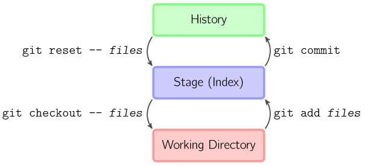

Here's What We'll Cover
- What is git?
- Fundamental Concepts
- Benefits of Git
- A simple example
- Creating the repo
- Committing
- Typical daily workflow
- Branching (see the changes instantly)
- Merging
- gitignore
- Xcode 4
- Getting more help
What is Git?
Git is a free & open source, distributed version control system designed to handle everything from small to very large projects with speed and efficiency.
Fundamental Concepts
- Git is distributed — No centralized server
- Changes are committed locally
- Collaborative code is shared via push & pull
- Branching and merging is easy and useful
Benefits of Git
- Work offline and yet still commit freely
- Cheap branching and merging
A simple example
Say your project is two HTML files and a CSS stylesheet...
Let's make a git repo!
Creating the repo
$ mkdir foo
$ cd foo
$ git init .
$ touch readme page1.html page2.html style.css
$ git add .
$ git commit -a -m "initial commit"
Committing

stuff to add
- basic commands: git commit, git diff --color, git pull, git push